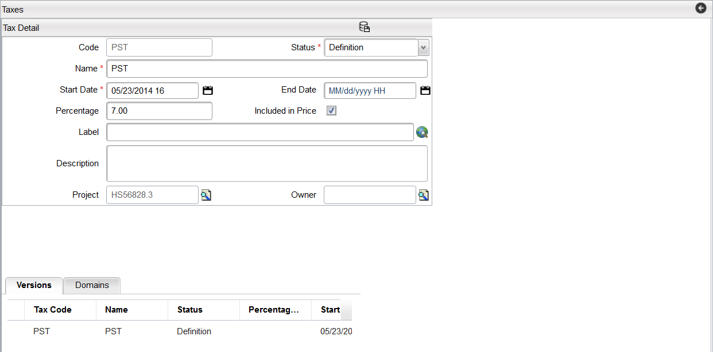

Use the Taxes section of the application to define all of your taxation rules. Clicking the Taxes menu option from the Catalog Designer menu brings up the Taxes Search page.
The Taxes Search pages displays all Tax codes and allows for a detailed search on Tax Code or Label criteria.
The Taxes page contains the following fields:
| Action | Description |
|---|---|
| Search | Returns results on the search criteria. |
| Add | Opens up the new object dialog. |
| Delete | Deletes the selected row. Only rows that are not active or archived can be deleted. |
| Detail | Displays the details of the selected Tax Code. |
| Change History | Performs a search displaying the objects containing the selected Tax Code within the Catalog. |
The Tax Detail page appears by Clicking the Add button on the Taxes Search page and it displays the details of the Tax Code. The Tax Code defines the percentage of Tax to be applied, and the start and end dates for which this tax is applied. When a Tax record is created a version is also created for the Tax. The following figure shows the Tax Detail as well as the Version detail.
The Tax Detail page contains the following fields:
| Field | Rule | Description |
|---|---|---|
| Code | Mandatory | A Tax Code (for example, VAT) |
| Status | Mandatory | The status of the object (Definition or Active) |
| Name | Mandatory | Enter a name for this tax. |
| Start Date | Mandatory | The date that this Tax becomes effective. |
| End Date | Optional | The date when this Tax is no longer effective. This field can be modified regardless of the status of the object. |
| Percentage | Optional | The tax percentage. For example, a value of 8.0 in this field is equivalent 8% or 0.08. |
| Included In Price | Optional | This field is checked by default, meaning that the tax is included in the price. Otherwise, to exclude the tax from the price, deselect this field. |
| Label | Optional | Label for this Tax, which is used in the application user interface.This field is a translational string that supports language translations (refer to Velocity Studio's Translation Element for more details). |
| Description | Optional | Enter a description about this tax in field. |
| Project | Optional | This field contains the project to which this object is associated. The default value is the open Project. |
| Owner | Optional | This field denotes the position of the user who created the project and only users with the same position or higher can access the project data. This value cannot be changed. Refer to Domains for more information. |
By performing a Copy of a Tax Code, the system creates a version of that Tax Code. This version is a clone of the copied instance and maintains the associations to all other objects. When a new version is created, the Start Date field is required but the End Date field can remain empty. A blank End Date means that the life span of the version is unlimited into the future. It is possible to have various version of the Tax Code that are Active at the same time and have overlapping Start and End Dates. The system will select the version whose start date most closely matches the application request date. The system will sort the versions by Start Date in descending order and will use the first version that is alive (for example, the version is within the start date and end date window).
For example, if there were two versions: